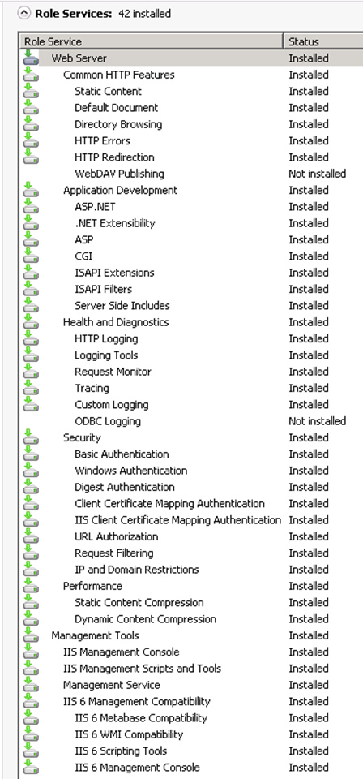
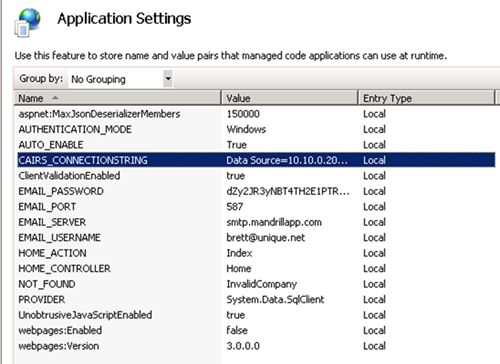

Installing UTA on Windows Server (2008 R2/2012)¶
Authors: Brett Burbidge
Install IIS¶
Open Server Manager
Add Web Server IIS Roll
Add the following Roll Services

Click Install
Restart the server
🔧 Run Amie (Pronounced Amy)¶
Note
We are currently working on this topic. More to come soon!
Verify the following settings by following the steps below¶
Open IIS on the web server
Verify: In Application Pools you should have a UTA app pool
Verify: In the Default Web Site you should see a UTA directory with the UTA App Pool
Click the UTA directory then Basic Settings…. To verify app pool
If both of these check out, continue, if not please retrace the steps above.
IIS Settings - Authentication¶
Open IIS and select the UTA folder under the Default Web Site
There are 3 different Authentication options.
Forms - Uses a username and password¶
This is the easiest to configure but not JITC certified.
IIS Settings
ASP.NET Impersonation: Disabled
Basic: Disabled
Digest: Disabled
Anonymous: Enabled
Forms: Enabled
Windows: Disabled
App Settings
Authenticaiton_Mode: Forms
Windows – Uses the users domain credentials to login¶
This is easy to configure and also JITC certified.
Note
Only users on the current domain will be able to access UTA.
IIS Settings
ASP.NET Impersonation: Disabled
Basic: Disabled
Digest: Disabled
Anonymous: Disabled
Forms: Disabled
Windows: Enabled
App Settings
Authenticaiton_Mode: Windows
Certificate – Uses the users CAC Certificate to login¶
Note
This is more complicated to configure and requires that the server has a HTTPS certificate and a DNS entry. This is JITC certified. Any users in or out of the domain will be able to access UTA. The UTA url might have to be whitelisted.
IIS Settings
ASP.NET Impersonation: Disabled
Basic: Disabled
Digest: Disabled
Anonymous: Enabled
Windows: Disabled
Forms: Disabled
App Settings
Authenticaiton_Mode: Certificate
Create Database¶
Open SQL Management Studio
Right Click on Databases
New Database (Name it traffic and select a location), click OK
Add Database User to Traffic Database.
Note
An existing CairsUser can be used or a new one created
Under Security, Logins, Create or select a User
Go to User Mapping page and select Traffic, then select db_owner
Click Ok to close the dialog box
The Cairs Connection¶
UTA queries the CallRecord table in the Cairs database for some reports. The following steps go through how to configure the connection.
Note
This is a one-way connection. UTA only reads from the CallRecord table for reports, it does not write any data to Cairs.
Add the Cairs database connection string in two places¶
In IIS Settings
Open IIS, select Default Web Site, Select UTA, double click on Application Settings.
Edit CAIRS_CONNECTIONSTRING set Value to the cairs database connection string.
- image of iis settings….
- 